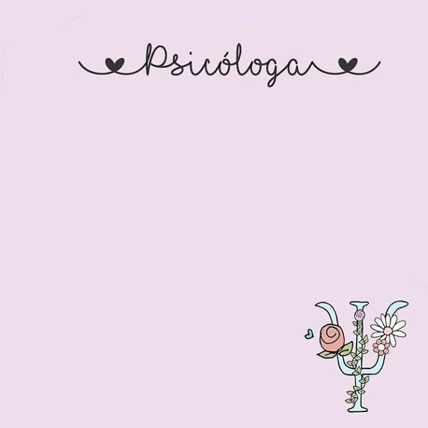

Si queres saber un poquito sobre mi...

Mi nombre es Virginia Wassermann y trabajo como psicologa hace 6 años. Vivo en la provincia de Chubut junto a mi familia y mis perras. Actualmente estoy trabajando en el "Centro Sonrisas" ubicado en la ciudad de Comodoro Rivadavia y tambien tengo sesiones de manera virtual.
Informacion academica
Estudie Licenciatura en psicologia en la Universidad del Salvador. Ejerci en Capital Federal durante dos años y luego me mude a Comodoro Rivadavia, donde trabajo actualmente. Realice capacitaciones en la Asociacion Pediatrica Argentina, UBA y otras grandes instituciones academicas. Atiendo adolescentes y jovenes adultos.